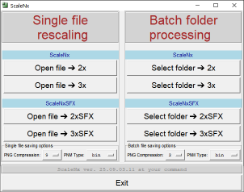

ScaleNx
Scale2x, Scale3x, Scale2xSFX and Scale3xSFX image scaling in pure Python
Scale2x and Scale3x algorithmsScale2x and Scale3x algorithms (sometimes referred to as AdvMAME2x and AdvMAME3x) were initially developed by Andrea Mazzoleni for scaling up small pixel graphics like game sprites and icons without introducing new colors and blurring contrast edges. That's what it was invented for, and nothing else.
Later on, Scale2xSFX and Scale3xSFX were introduced for the same goal, providing different diagonals rendering and eliminating artifacts initial ScaleNx produce on some patterns.

Example of consecutive upscaling with Scale3xSFX trice.
As can be seen above, Scale3xSFX keeps image sharp and tries to keep lines straight and accurate.
Keep in mind that image was increased 3*3*3 = 27 times, meaning number of pixels increased 729 times,
that is, almost all the resulting pixels are artificial.
However, it appears that ScaleNx may be successfully misused for absolutely different task: scaling up low-res text scans before OCR, and drawings before tracing them to vectors.
With that in mind I created pure Python implementation of ScaleNx algorithms, which can be downloaded from GitHub. By saying «pure Python» I mean it - it doesn't even use bytearrays, only lists of lists of lists. Consider it a spiritual practice or whatever. You can download it as fully functional application, as well as «ScaleNx» module to import into your software and/or just to laugh at it.
ScaleNx package includes suitable human-ready GUI shell, not surprisingly called ScaleNxGUI.py, providing easy launch of single PNG, PPM or PGM (PBM support is limited to reading only, result may be saved to another format like PNG) file rescaling procedure or batch rescaling of all images (in forementioned formats) in chosen folder and subfolders. Note that batch processing uses asynchronous multiprocessing, greatly reducing run time for a price of devouring next to 100% of CPU power, taking RAM for several images simultaneously, and rendering GUI rather unresponsive, looking like it hung up. Don't worry, it can't hang up, it can only possibly crash when trying to process really huge images (although for most recent version I yet have to see it).
Needless to say, PNG support in ScaleNxGUI is provided with PyPNG, and PPM and PGM support with PyPNM; both are pure Python modules, thus making the whole program quite cross-platform. There is even Python 3.4-compatible build (see below), successfully tested under Windows XP.
ScaleNX version |
Download site |
Download content |
|---|---|---|
Current version |
ScaleNx module and user-friendly application for single file or batch image rescaling, for Python 3.10 and above. |
|
Python 3.4 compatible |
ScaleNx module and user-friendly application for single file or batch image rescaling, for Python 3.4 and above. |
|
ScaleNx module only, for Python 3.4 and above. |
Update: - In main ScaleNx version 25.09.03.11 and it's Python 3.4 companion version 25.09.03.34 PNG compression and PPM/PGM type (binary or ascii) settings may be configured via GUI option menus and saved by Ctrl+Clicking on info bar as JSON "scalenx.ini" file in your user directory (directory address get copied to clipboard so you may paste it into your file manager and instantly get right to this directory, wherever it is). File may be edited with any text editor, and loaded back to ScaleNc with Alt+Click to info bar (for toads in dementia all these hints appear on mouse over info bar).
Speaking of dementia, version 25.08.22.34 was intentionally downgraded from pathlib to os, making it even more compatible with old Python version. Now you can read the Source and see how ladies were laid and recursive directory reading was made before Path.rglob was introduced.
Both main and .py34 versions are relinked with newest PyPNM version 2, providing considerable memory usage saving while working with PPM and PGM files.
Previously on ScaleNx:Version 25.02.09.18 of main program have no change in ScaleNx module but is relinked with updated version of PyPNM module providing per row file writing, thus reducing memory usage; PyPNG data exchange changed to row generators thus making memory usage as small as possible with this format.
On my rather old notebook main ScaleNxGUI program appeared to be able to upscale 8224x8224 px RGB image with Scale2x and Scale2xSFX up to 16448x16448 px, and then successfully save the result as both PNG and PPM. Considering the fact that resulting image will be something like 1.4x1.4 meters when printed at 300 ppi, I assume that further experiments with larger images on my notebook may raise doubts in my formally confirmed «mentally sane» status.
In version 25.02.01 FIR optimization of Scale2x, Scale3x, Scale2xSFX and Scale3xSFX performed, speed gain is in range from ca. 15% for Scale2x to ca. 50% for the others (since Scale2x work on minimal kernel already, there's not much room for further list read access reduction, therefore speed increase is minimal).
For Windows users, compiled ScaleNxGUI32.exe for Windows XP 32 bit and ScaleNxGUI64.exe for Windows 10 64 bit are available for download at newest release page, what as to other platforms, since the program is pure Python and quite self-contained, release source is supposed to work with any current canonic Python installation right out of the box.
Below is the illustration of Scale3xSFX interpolation of small black and white text, twice.

As you can see, Scale3xSFX interpolation is quite unusual and absolutely different from ones you know from Photoshop or GIMP - unlike bilinear and bicubic it keeps image sharp, and unlike nearest neighbour it pays attention to diagonals.

Example of "M.U." image upscaling from screen to printable size
As a side note, it's worth mentioning that, when working with PNG, ScaleNxGUI.py changes PNG resolution (if present) so that image print size remains unchanged. You consider using this fact for batch increasing resolution for documents with linked images (or, with some manual intervention, for container documents).
Now it's time to proceed to ScaleNx at GitHub for downloads. For developers: ScaleNx at PyPI.
...or Move back to main page.